Onde conseguir
- Obtida através de projeto especial de criação
- Requer peças coletadas em fortalezas invadidas
- Necessário desmontar a sniper Adrestia SR1
- Exige progressão semanal e conclusão de várias etapas
A Nemesis é uma exótica voltada para precisão extrema e eliminação de alvos à distância. Obtida através de um projeto especial, ela permite carregar o disparo para causar dano massivo, sendo uma das melhores escolhas para jogadores que preferem controle total do combate e foco em headshots.
A Nemesis recompensa paciência e precisão. Seu talento permite carregar o disparo para causar dano massivo, além de marcar alvos e aumentar a eficiência contra inimigos prioritários.

NêmesisCom a Nemesis, cada disparo pode definir o combate. Domine o carregamento, escolha o momento certo e elimine alvos com precisão cirúrgica no endgame.